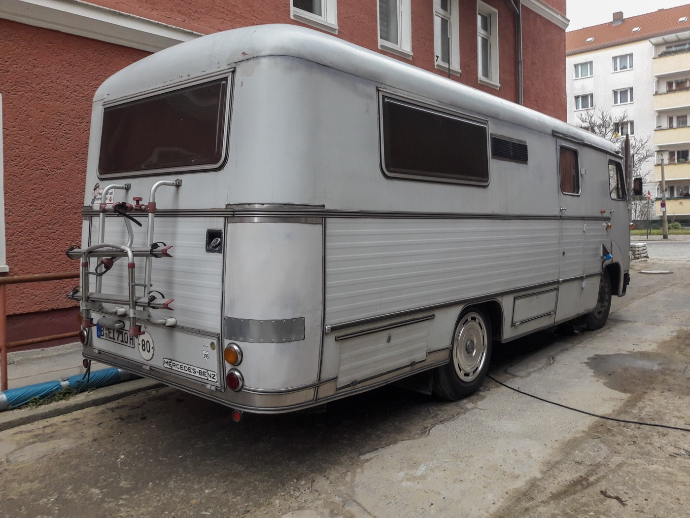
客人出遊紀錄與實際使用照片
從真實情境看露營車怎麼用，並對照觀光署旅遊安全與國家風景區資訊。
每篇皆含實用整理與延伸資源，並可連回官網主要頁面
以下 11 篇為長文整理：首圖使用 Wikimedia Commons 開放授權素材（非客戶實拍），內文附政府與官方觀光連結、五欄重點表與關鍵字標籤。

從真實情境看露營車怎麼用，並對照觀光署旅遊安全與國家風景區資訊。
把星等還原成可追問的檢核項：教學、費用、車況與客服。
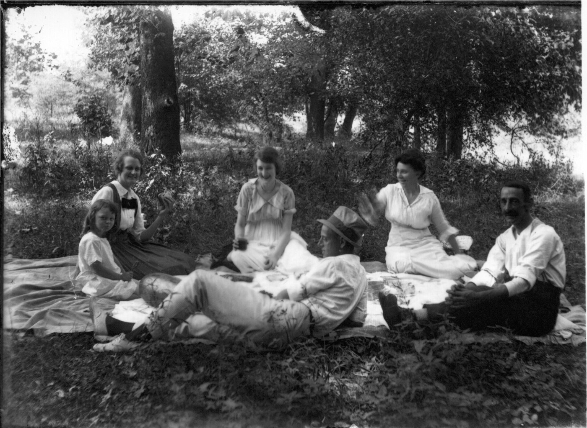
依情境拆需求：床位、衛浴、派對布置與婚禮支援動線。

用北北基桃、竹苗山線、中彰投、雲嘉南高屏、東部離島建立規劃骨架。
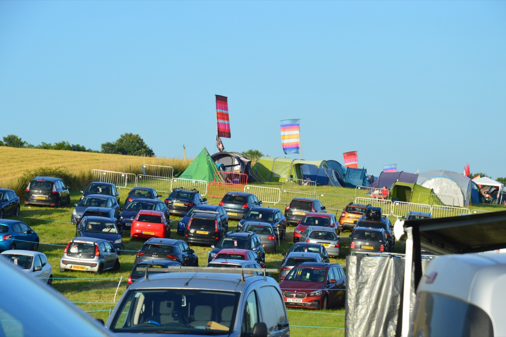
合法營地、高度淨空、迴轉與排污等五項檢核。
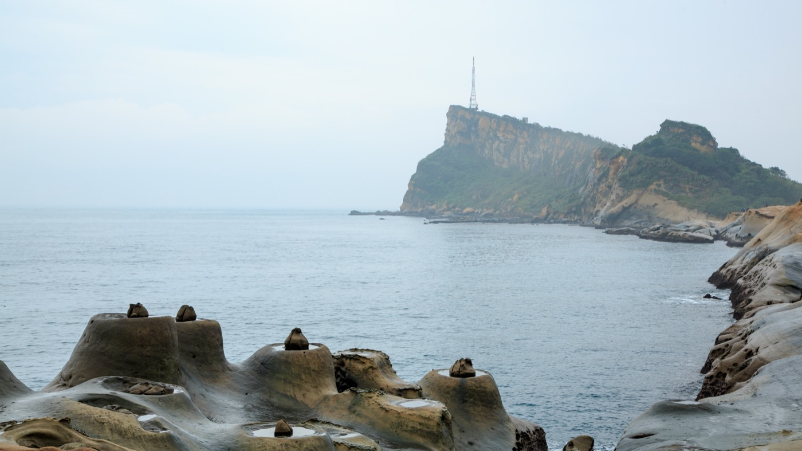
都會進出、北海岸與轉場山線的路線骨架與風險備案。

三縣市官方觀光網＋營區電話前必問五題。
五條海線方向：北海岸、桃竹、中彰濱海、雲嘉南與恆春半島。
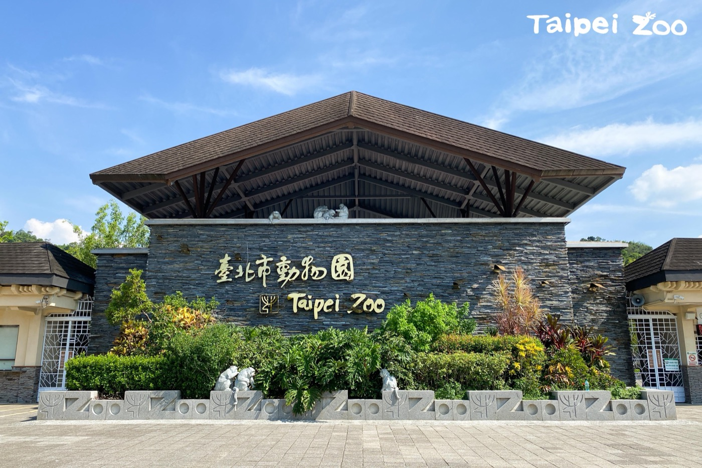
動物園、博物館、海邊、森林與樂園周邊的露營車動線與休息策略。
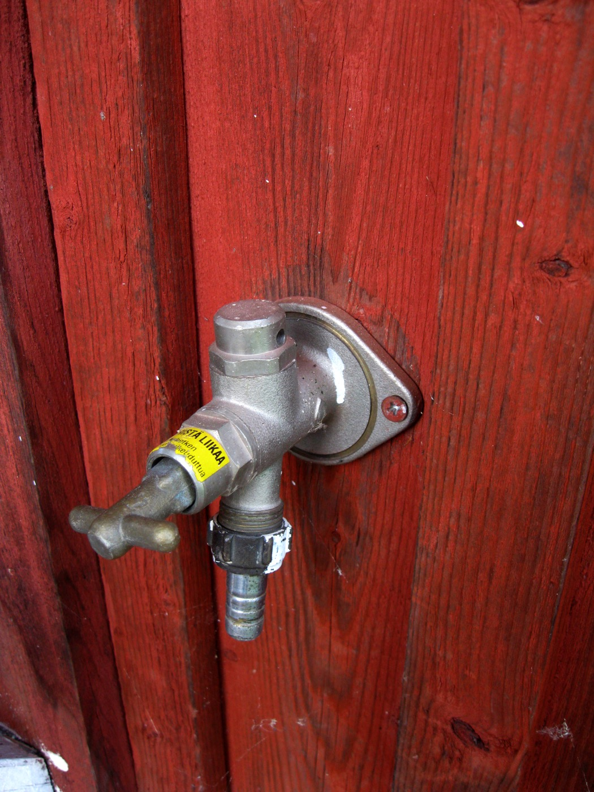
補水禮儀、外接電安培與排水安全五檢查。
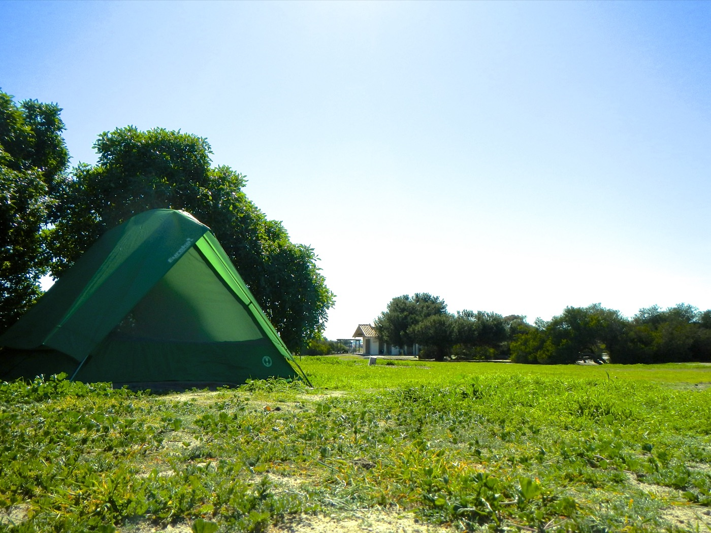
從租車指南到三天兩夜與 YouTube 資源的五步學習路徑。
原有精選資源，適合第一次來的讀者
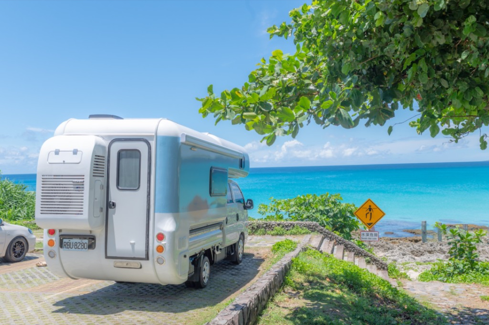
從取車方式、是否可送車、車型大小、衛浴與新手友善度切入，幫你在搜尋「台北露營車租借」時更快建立比較清單，並理解三天兩夜方案與價格區間背後的差異。
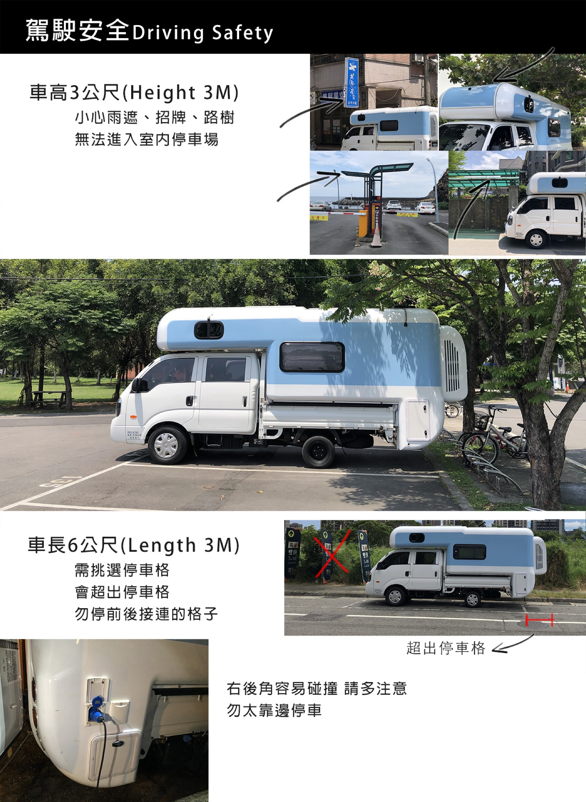
整理新手最常卡關的補水、排水、電力與冷氣觀念，並引導你回到官網的露營車使用教學頁，把操作步驟與營區接電策略一次串起來。
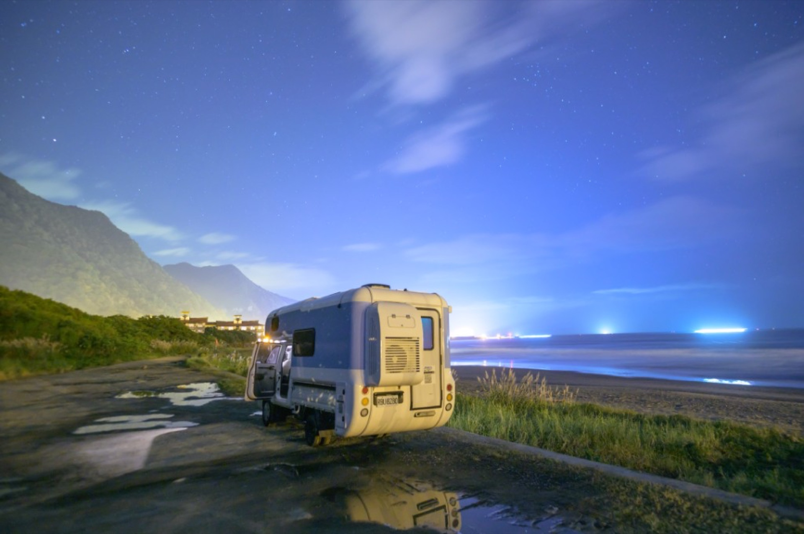
用「第一天移動、第二天定點、第三天返程」的節奏，說明為什麼露營車旅行不適合排太滿，並以台北出發族群常見的路線思維提供靈感。
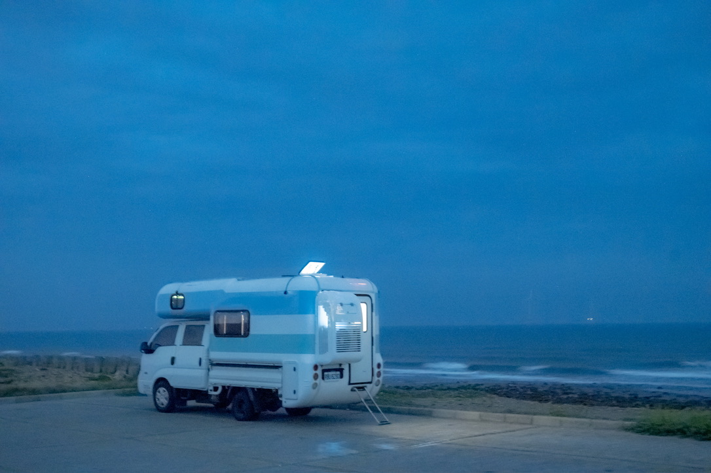
第一晚住碉堡露營區熟悉水電與戶外設備，第二天慢遊北海岸，第二晚可選白沙灣或翡翠灣海邊停靠；附可展開的 Day 1–3 行程卡與停靠提醒。
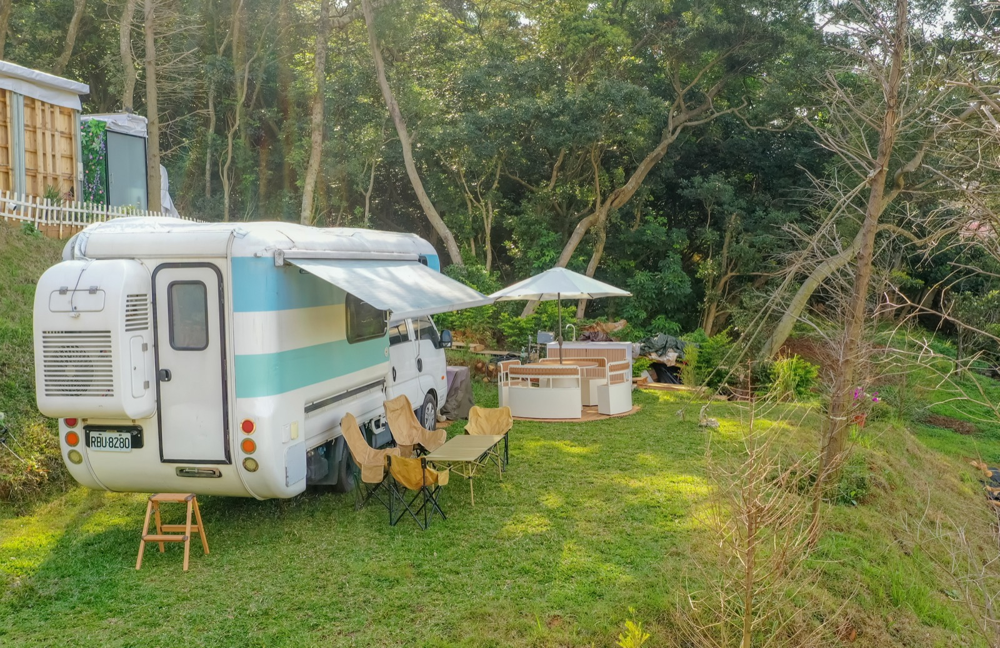
露營車出租價格不是只看數字，還要一起看是否含衛浴、是否可送車、是否適合新手與最低租期；本篇用條列方式幫你對齊決策重點。
親子出遊最在意睡眠、盥洗與食材保存；本篇以兩張雙人床、獨立衛浴、冰箱與冷氣為主軸，說明為什麼這類配置能降低新手壓力。
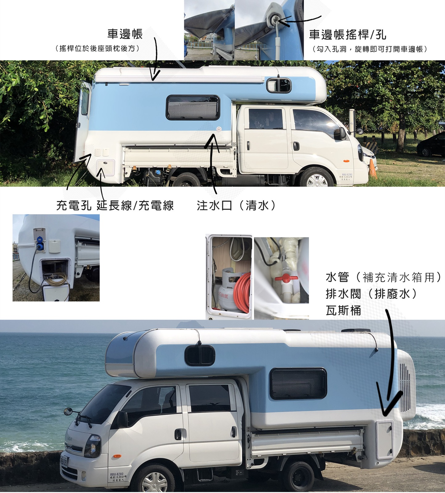
比較露營車自駕定點、露營區小木屋與傳統搭帳在機動性、費用結構與準備成本上的差異，並連回官網首頁與 FAQ 做決策。
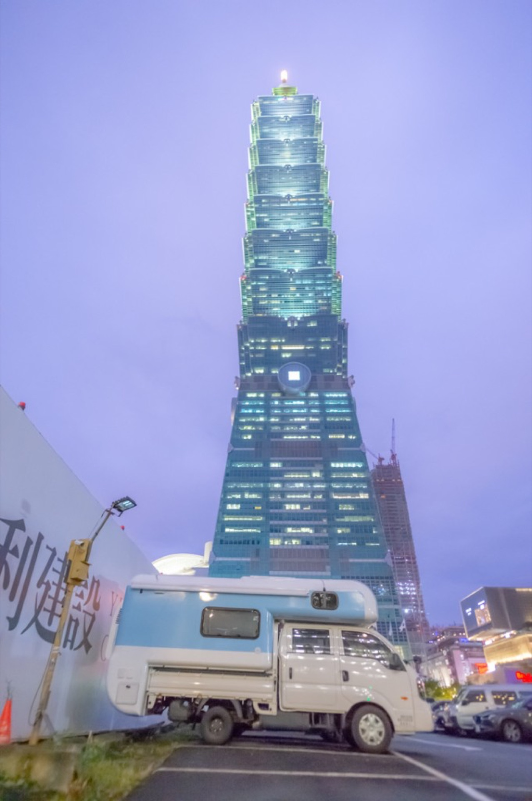
說明為何以台北露營車出租為主服務區、桃園與新竹為延伸，並整理指定地點送車在行程安排上的實際優勢。
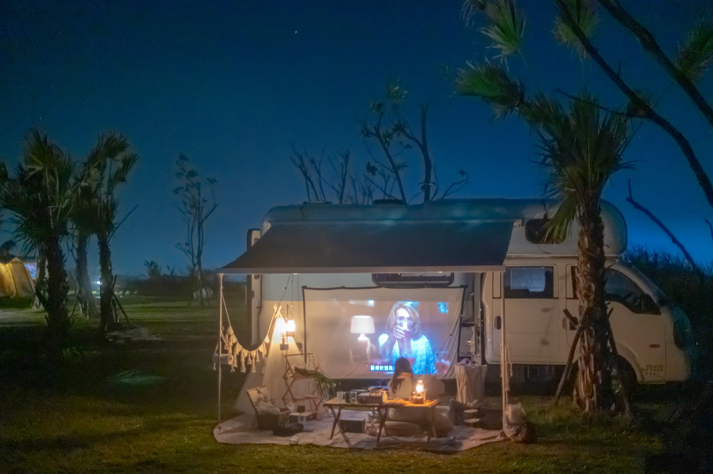
把 YouTube 教學、旅遊靈感、官網教學頁與戶外安全觀念整理成入口清單，方便你建立屬於自己的露營車學習路徑。